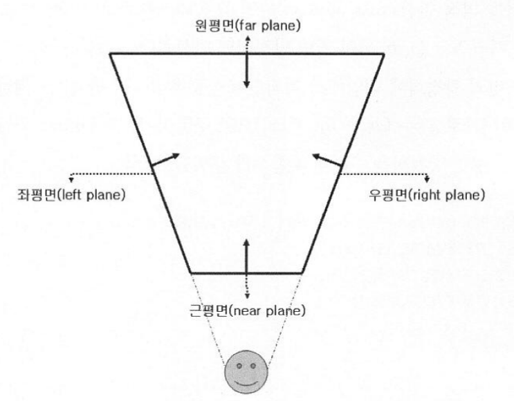

LightShaft_Postprocess
- Shaft : 한 줄기 광선, 전광
- wiki : aka. Sun beam / Sun Shafts/ Crepuscular Ray / God Ray
Frustum
- Frustum : 절두체


- Camera.stereoActiveEye
- Camera.MonoOrStereoscopicEye.Mono : 파랑
- Camera.MonoOrStereoscopicEye.Left : 초록
- Camera.MonoOrStereoscopicEye.Right : 빨강
_materia_LightShaft.SetVector("_CameraPositionWS", camera.transform.position);
_materia_LightShaft.SetMatrix("_Matrix_CameraFrustum", FrustumCorners(camera));
private Matrix4x4 FrustumCorners(Camera cam)
{
// ref: http://hventura.com/unity-post-process-v2-raymarching.html
Transform camtr = cam.transform;
// frustumCorners
// 1 +----+ 2
// | |
// 0 +----+ 3
Vector3[] frustumCorners = new Vector3[4];
cam.CalculateFrustumCorners(
new Rect(0, 0, 1, 1), // viewport
cam.farClipPlane, // z
cam.stereoActiveEye, // eye
frustumCorners // outCorners
);
// frustumVectorsArray
// 3 +----+ 2
// | |
// 0 +----+ 1
Matrix4x4 frustumVectorsArray = Matrix4x4.identity;
frustumVectorsArray.SetRow(0, camtr.TransformVector(frustumCorners[0]));
frustumVectorsArray.SetRow(1, camtr.TransformVector(frustumCorners[3]));
frustumVectorsArray.SetRow(2, camtr.TransformVector(frustumCorners[1]));
frustumVectorsArray.SetRow(3, camtr.TransformVector(frustumCorners[2]));
// in Shader
// IN.uv
// (0,1) +----+ (1,1)
// | |
// (0,0) +----+ (1,0)
//
// int frustumIndex = (int)(IN.uv.x + 2 * IN.uv.y);
// 2 +----+ 3
// | |
// 0 +----+ 1
return frustumVectorsArray;
}
struct Ray
{
float3 origin;
float3 direction;
float3 energy;
};
Ray CreateRay(in float3 origin, in float3 direction)
{
Ray ray;
ray.origin = origin;
ray.direction = direction;
ray.energy = float3(1, 1, 1);
return ray;
}
Ray CreateCameraRay(in float2 uv)
{
// 원점이 화면 중앙이 되도록 uv [0, 1]을 [-1, 1]로 변경.
float2 screenUV = uv * 2.0f - 1.0f;
// -1이 있는 이유는 unity_CameraToWorld의 구성요소가 camera.cameraToWorldMatrix와는 다르기 때문이다.
float4x4 negativeMat = float4x4(
1, 0, 0, 0,
0, 1, 0, 0,
0, 0, -1, 0,
0, 0, 0, 1
);
float4x4 cameraToWorldMatrix = mul(unity_CameraToWorld, negativeMat);
// 카메라 공간 (0, 0, 0)으로 cameraPositionWS 좌표를 얻어와서
float3 cameraPositionWS = mul(cameraToWorldMatrix, float4(0.0f, 0.0f, 0.0f, 1.0f)).xyz;
// 프로젝션 (curr.x, curr.y, 1)에서 currPositionWS를 얻어와서 ray의 방향을 구한다.
float3 currPositionCamera = mul(unity_CameraInvProjection, float4(screenUV, 1.0f, 1.0f)).xyz;
float3 currPositionWS = mul(cameraToWorldMatrix, float4(currPositionCamera, 0.0f)).xyz;
float3 rayDirection = normalize(currPositionWS);
return CreateRay(cameraPositionWS, rayDirection);
}
float4x4 _Matrix_CameraFrustum;
// IN.uv
// (0,1) +----+ (1,1)
// | |
// (0,0) +----+ (1,0)
// frustumIndex
// 2 +----+ 3
// | |
// 0 +----+ 1
int frustumIndex = (int)(IN.uv.x + 2 * IN.uv.y);
half3 frustumPositionCamera = _Matrix_CameraFrustum[frustumIndex].xyz;

frustumPositionWS와 normalize(frustumPositionWS)


예
// 1. shadow맵과 depth 맵을 이용하여 마스크 맵을 만든다
#include "Packages/com.unity.render-pipelines.universal/ShaderLibrary/Shadows.hlsl"
#include "Packages/com.unity.render-pipelines.universal/ShaderLibrary/DeclareDepthTexture.hlsl"
// 카메라의 Frustum의 각 꼭지점을 구하고, normalize하여 해당 방향으로 ray를 쏜다
half stepDistance = _MinDistance + (step * Random(rayDirWS.xy, _Time.y * 100));
// 2. 합한다
color = lerp(mainTex, _MainLightColor.rgb, lightShaftMask);
관련자료
- Shadow Volume Algorithm (Modified) [ MAX 1986 ]
- Slice-based volume-rendering technique [ Dobashi & Nishta & Yamamoto 2002 ]
- Hardware Shadow Map [ Mitchell 2004 ]
- Polygonal Volume [ James 2003 Based On Radomir Mech 2001]
- Volumetric Light Scattering [ Hoffman & Preetham 2003 ]
Ref
- GDC2008 - Crysis Next-Gen Effects
- https://developer.nvidia.com/gpugems/gpugems3/part-ii-light-and-shadows/chapter-13-volumetric-light-scattering-post-process
- https://blog.naver.com/sorkelf/40152690614
- https://blog.naver.com/eryners/110127353463
- http://maverickproj.web.fc2.com/pg65.html
- ShaderX3 Advanced Rendering with DirectX and OpenGL
- 8.1 Light Shaft Rendering